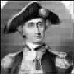

坚持的价值
●罗伯特·科利尔
安详、明亮的月光洒向平静的海面。
但空中突然响起了枪炮的轰鸣，海水咸腥的气息立刻被硝烟的辛辣所中和。折断的桅杆、圆木和风帆的碎片漂得到处都是——到处都是拼命挣扎的人们。
其中一条船上的枪炮突然静了下来——这条船的帆已经没了，桅杆也只剩下了参差的杆子，在水面以下的船体已经裂开。它的船长是不是已经决定投降了？毕竟他能有的选择只是一条沉船和葬身海底，他或许认为该投降了。
另外一条船的船长注意到了这突然的平静。投降了吗？他想着，如果他们已经弃械的话，他们的舰旗应该已经降下来了，但是透过烟雾看不清他们在做什么。因此他朝对面的船喊了过去：
“你们降旗了吗？”从那正在碎裂的船上传来了回答，充满了挑战：“我还没开始战斗呢！”
那是约翰·保罗·琼斯，美国海军的英雄。他远远不是要承认失败，他在想着进攻的新计划。
因为他自己的船正在下沉，他取胜的唯一办法就是登上对方的船，在英国人的船上与之作战！
慢慢地他把自己那艘已经难以驾驭的船靠近了敌船。船帆刮了下船帆，然后又滑开了。保罗·琼斯的船试了几次要靠牢敌船，但都没有成功。然后，很巧的，他的船只的锚钩钩住了对方船上的铁链。抓到敌人了！很快水兵们就熟练地把两条船用绳子紧紧地绑在了一起。
“到他们的船上去，到他们的船上去！”约翰大喊，这些勇敢的美国水兵游到了对方的船上——开始了战斗。
很快，唯一幸存的英舰的船长降下了自己的旗帜，而约翰和他英勇的士兵们则成了英舰“萨拉匹斯”号的主人。当他们驾船离开时，他们自己的那条无望的船，慢慢地沉没了。
我们中的大多数人远比我们自己所认为的更能够坚持。如果不是因为坚持，约翰不会驾着萨拉匹斯回国而很可能已经和他的船一起葬身海底了，或者已被英军抓获，被作为海盗在桅杆上绞死。
我们都很能坚持——但却不能正确地运用这种坚持。在两个人当中，一个聪明，但不甚坚持；另一个只是一般聪明，但却极能坚持。第二个人取得巨大成就的可能性肯定要比第一个大得多——无论是在科学、艺术还是商业领域。均衡的法则总是偏爱那些执著的人，坚持是一个人生命意志的表达。如果最初你没有成功，就用不同的方法再试一次，我们或许可以借助这一力量来排除障碍、取得自由或成功。
(刘嘉摘自《年轻人》2006年A版十月号)